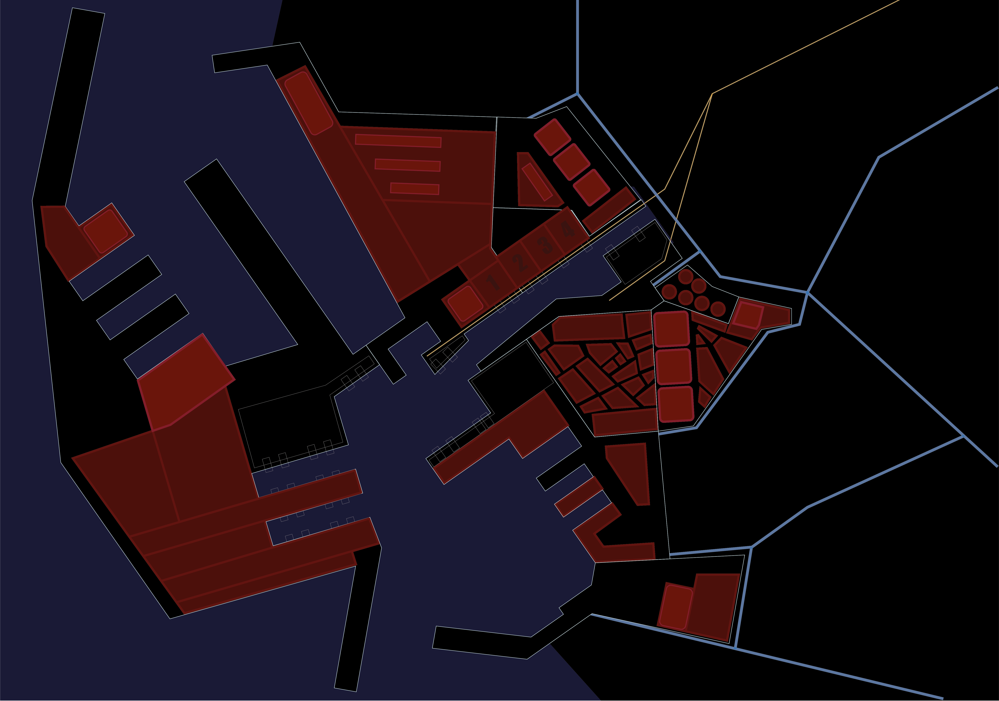
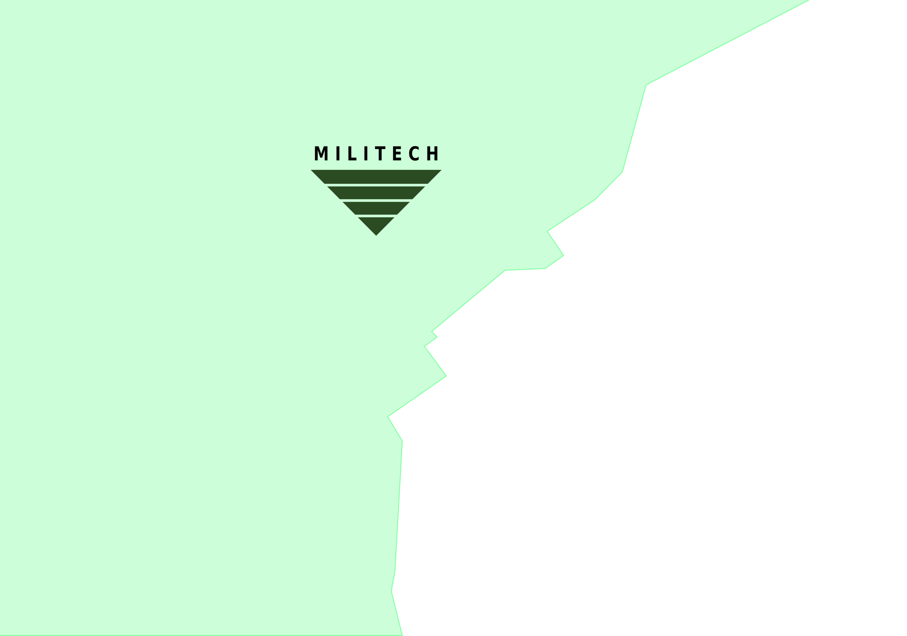
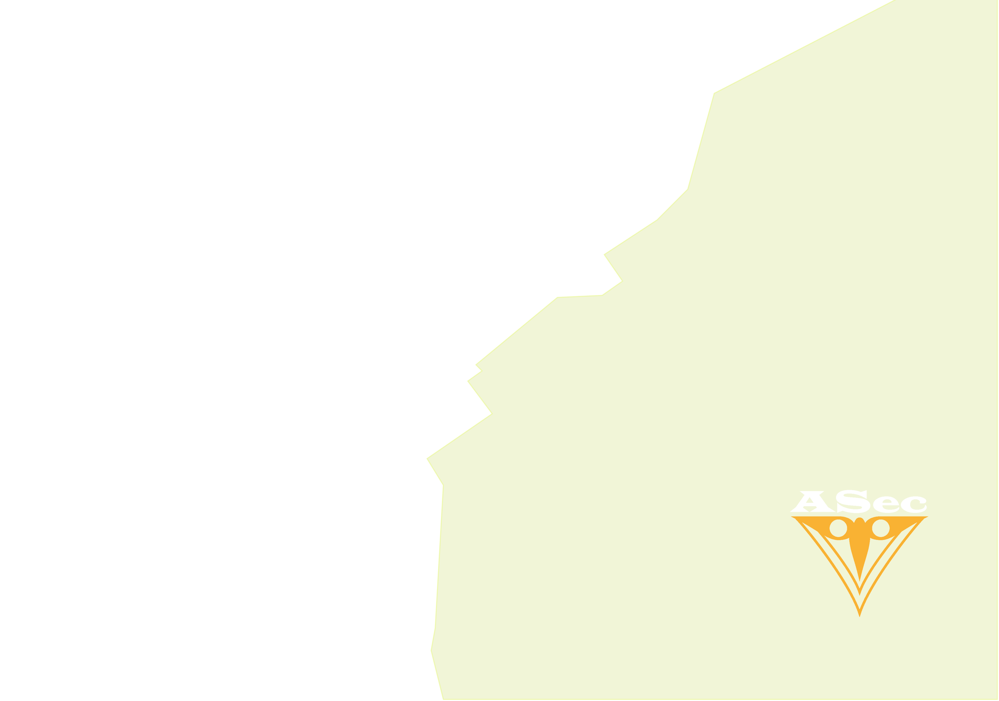

CYBERPUNK ><#>
NEW GAME
LEVEL SELECTION



SYSTEM
NEXT >>
NYX
Character
<Click anywhere to continue>
LEÇAS PORT REGION MAP
TUTORIAL
1. MANUFACTURING FACILITY
2. ADMINISTRATIVE BUILDING
3. CONTAINER YARD
4. TESTING GROUNDS
5. CONTROL TOWER
TEST LEVEL
BACK TO MENU
<< PREV
NEXT >>
ACTION POINTS:
4
NET ACTIONS:
2
END TURN
NEURAL INTEGRITY
ASCEND
DIVE
SONAR.EXE
SWIM.EXE
HARPOON.EXE
SWORDFISH.EXE
SCALES.EXE